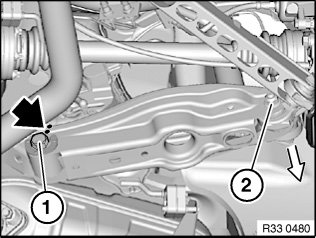
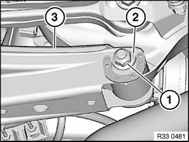
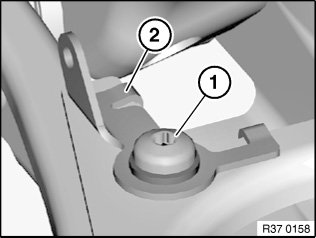

<!DOCTYPE html>
<html>
  <head>
    <title>33 32 190 Removing and Installing/Replacing Left Or Right Camber Arm — 2011 BMW 128i Coupe (E82) L6-3.0L (N52K) Service Manual | Operation CHARM</title>
    <meta name='description' content="Detailed repair manual for the 2011 BMW 128i Coupe (E82) L6-3.0L (N52K).">
    <link rel='stylesheet' href="../style.css">
    <meta name='viewport' content='width=device-width, initial-scale=1.0' />
  </head>
  <body>
    <div class='theme-colors header'>
      <div class='branding'><b>Operation CHARM</b>: Car repair manuals for everyone.</div>
<div class=breadcrumbs><a class='breadcrumb-part' href="../">Home</a> <b>&gt;&gt;</b> <a class='breadcrumb-part' href="../BMW/">BMW</a> <b>&gt;&gt;</b> <a class='breadcrumb-part' href="../BMW/2011/">2011</a> <b>&gt;&gt;</b> <a class='breadcrumb-part' href="../index.html">128i Coupe (E82) L6-3.0L (N52K)</a> <b>&gt;&gt;</b> <a class='breadcrumb-part' href="0.html">Repair and Diagnosis</a> <b>&gt;&gt;</b> <a class='breadcrumb-part' href="0.html#Steering%20and%20Suspension/">Steering and Suspension</a> <b>&gt;&gt;</b> <a class='breadcrumb-part' href="0.html#Steering%20and%20Suspension/Suspension/">Suspension</a> <b>&gt;&gt;</b> <a class='breadcrumb-part' href="0.html#Steering%20and%20Suspension/Suspension/Control%20Arm/">Control Arm</a> <b>&gt;&gt;</b> <a class='breadcrumb-part' href="0.html#Steering%20and%20Suspension/Suspension/Control%20Arm/Service%20and%20Repair/">Service and Repair</a> <b>&gt;&gt;</b> <a class='breadcrumb-part' href="1824.html">33 32 190 Removing and Installing/Replacing Left Or Right Camber Arm</a></div></div>
<div class="theme-colors floaty-message lemon-message">
  <b style="font-size: 1.5em; color: gold">Manuals through 2025 now available!</b>
  <br><br>
  Our trusted friends have launched a new website named LEMON, which has newer manuals. It also contains all the CHARM manuals.
  <br><br>
  LEMON is the spiritual successor to  CHARM, I recommend you try it!
  <br><br>
  Link: <a style='white-space: nowrap' href="../missing-page">lemon-manuals.la</a> or <a style='white-space: nowrap' href="../missing-page">lemon-manuals.org.ua</a>
  <br><br>
  (Some people have issue connecting. LEMON is investigating. For now, use Firefox or change your DNS server)
  <br><br>
  Or, hide this message: <a href="../missing-page">temporarily</a> or <a href="../missing-page">permanently</a>
</div>
<div class='main'>
<h1>33 32 190 Removing and Installing/Replacing Left Or Right Camber Arm</h1><b>33 32 190 Removing and installing/replacing left or right camber arm</b><br><br><div class='oxe-image'></div><br><br><br><br><span class='indent-2'>&#09;</span><b>Warning!</b><br><span class='indent-5'>&#09;</span>Scalding hazard!<br><span class='indent-5'>&#09;</span>This work may only be carried out on an exhaust system which has cooled down.<br><br><div class='oxe-image'></div><br><br><br><br><span class='indent-2'>&#09;</span><b>Note:</b><br><span class='indent-2'>&#09;</span>If the camber arm is detached from the rear axle carrier/wheel carrier, it is necessary after reinstallation to carry out a wheel/chassis alignment check.<br><br><div class='oxe-image'></div><br><br><br><br><span class='indent-2'>&#09;</span><b>Necessary preliminary tasks:</b><br><span class='indent-2'>&#09;</span>^<span class='indent-5'>&#09;</span>Remove coil spring at rear<br><span class='indent-2'>&#09;</span>^<span class='indent-5'>&#09;</span>Remove rubber mount for shock absorber mounting on camber arm<br><span class='indent-2'>&#09;</span>^<span class='indent-5'>&#09;</span>Remove jointed rod of <a href="1840.html">ride height sensor</a> from camber arm bracket<br><br><div class='oxe-image'></div><br><br><br><br><span class='indent-2'>&#09;</span>Support wheel carrier with workshop jack.<br><br><span class='indent-2'>&#09;</span>Mark position of eccentric screw (1) to camber arm.<br><br><span class='indent-2'>&#09;</span>Replacement only: Carry over marking from old part to new part.<br><br><span class='indent-2'>&#09;</span>Release nut (2) and remove bolt towards rear.<br><br><span class='indent-2'>&#09;</span>Tightening torque 33 32 10AZ.<br><br><span class='indent-2'>&#09;</span><b>Installation:</b><br><span class='indent-2'>&#09;</span>Note insertion direction of screw.<br><br><span class='indent-2'>&#09;</span>Replace self-locking nut.<br><br><div class='oxe-image'></div><br><br><br><br><span class='indent-2'>&#09;</span>If necessary, remove exhaust system bracket from rear axle carrier.<br><br><span class='indent-2'>&#09;</span>If necessary, remove rear muffler from body.<br><br><div class='oxe-image'></div><br><br><br><br><span class='indent-2'>&#09;</span>Release nut (1) and remove eccentric washer (2).<br><br><span class='indent-2'>&#09;</span>Tightening torque 33 32 9AZ.<br><br><span class='indent-2'>&#09;</span>Pull out eccentric screw and remove camber arm (3).<br><br><span class='indent-2'>&#09;</span><b>Installation:</b><br><span class='indent-2'>&#09;</span>Note insertion direction of eccentric screw.<br><br><span class='indent-2'>&#09;</span>Align eccentric screw by means of marking to camber arm.<br><br><span class='indent-2'>&#09;</span>Fit eccentric washer (2).<br><br><span class='indent-2'>&#09;</span>Replace nut (1).<br><br><div class='oxe-image'></div><br><br><br><br><span class='indent-2'>&#09;</span><b>Replacement:</b><br><span class='indent-2'>&#09;</span>Replace lower spring pad (refer to Removing and installing/replacing coil spring ).<br><br><span class='indent-2'>&#09;</span>Version with xenon lights:<br><br><span class='indent-2'>&#09;</span>Release screw (1) and remove bracket (2).<br><br><span class='indent-2'>&#09;</span>Tightening torque 37 14 4AZ.<br><br><div class='oxe-image'></div><br><br><br><br><span class='indent-2'>&#09;</span><b>After installation:</b> <br><span class='indent-2'>&#09;</span>^<span class='indent-5'>&#09;</span>Perform chassis alignment check<br><br><h3>��:</h3><div class='oxe-image'></div><br><br><br><div class='oxe-image'></div><br><br><br></div>
<div class="theme-colors footer">
  <i>pro multis</i> · <a href="../about.html">About Operation CHARM</a>
</div>
<script src="../script.js"></script>
</body>
</html>
